免費
MIT 授權，開放原始碼。
鍵盤驅動瀏覽
來自 Noctivagous Software 的 Chrome 擴充功能
用滑鼠指向。
用鍵盤啟用。
更快捷的網頁瀏覽方式。
核心手勢
用滑鼠指向。用按鍵點擊。


使用 KeyPilot 是什麼感覺
我們做了一個 KeyPilot 的微型網頁瀏覽器示範，包含兩項按鍵操作。將滑鼠停在連結上，按 F 開啟。按 D 返回。
此示範面向桌面電腦，需要同時使用滑鼠和鍵盤。
濱海新聞
港灣新聞
 本週末，港區燈光將重新點亮
碼頭夜步重新開放
關於本報
本週末，港區燈光將重新點亮
碼頭夜步重新開放
關於本報
工人完成了 4 號碼頭最後一排燈具，為期兩年的修復工程結束。
日落後夜步重新開放。市場攤位延長一小時營業。
閱讀：碼頭夜步重新開放
日落後再開放步道，4 號碼頭加裝了照明。
濱海商戶預計將迎來繁忙的秋日週末。
《港灣新聞》自 1884 年起報導中部海岸與佩諾布斯科特灣。
這份微型報紙用來試用 KeyPilot 的 F 鍵和 D 鍵。
鍵盤
KeyPilot 提供一整套按鍵操作配置。下方是鍵盤參考視窗的重現，您可以在使用本程式時保持它開啟。將指標懸停在按鍵上，查看它在預設瀏覽配置中的作用。
頁面上


雙模控制
這款擴充功能旨在推廣我們稱為雙模控制的介面理論。仍照舊使用滑鼠移動游標，但以鍵盤按鍵而非滑鼠按鈕來啟用。將游標停在連結上，按 F 即可點擊，或按 G 在背景新分頁中開啟。這樣很快。我們稱之為按鍵點擊。
除 F 之外還有許多按鍵操作。KeyPilot 的強大之處正在於此：一套包含大量按鍵點擊功能的鍵盤配置，可在內建的 Layout Config 編輯器中自訂。免費，採用 MIT 授權。
本頁的按鍵點擊動畫展示了這一手勢：用滑鼠指向，按 F 開啟，再按 D 返回。
為何選擇 KEYPILOT
MIT 授權，開放原始碼。
為高效操作打造的鍵盤配置。
擴充功能安裝即可使用。